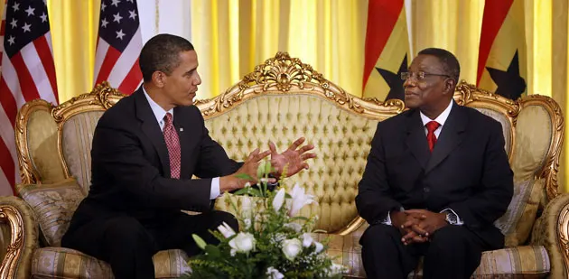

John Evans Fiifi Atta Mills
Asomdweehene

First from right. Interacting with Former US President Barack Obama.
Mills' Life in Bits
- Born on 21 July 1944 in Tarkwa, in the Western Region of Ghana.
- He had his primary and middle school education at Huni Valley Methodist Primary School and Komenda Methodist Middle School respectively.
- He then proceeded to the prestigious Achimota School for his secondary education, where he completed the Ordinary and Advanced-Level Certificates in 1961 and 1963 respectively.
- He proceeded to University of Ghana, Legon where he studied and obtained a bachelor of law degree, LLB and a professional law certificate in 1967.
- Mills studied at the London School of Economics and Political Science where he obtained an LLM in 1968 and earned a PhD in Law at the School of Oriental and African Studies School of Law, part of the federal University of London, after completing his doctoral thesis in the field of taxation and economic development in 1971 at the age of 27.
- In 1971, he was selected for the Fulbright Scholar programme at Stanford Law School in the US.
- He was a lecturer at the Faculty of Law at the University of Ghana for almost twenty five years
- He was a visiting professor at Temple University (Philadelphia, USA) from 1978-79 and 1986-87. From 1985-86, he was a visiting lecturer at Leiden University in the Netherlands.
- 1988 -1993 Mills was the Acting Commissioner of Ghana's Internal Revenue Service.
- 1993 to 1996 He became the Commissioner of Ghana's Internal Revenue Service.
- 1996 to 2000 Vice President of Ghana.
- 2008 - 2012 President of the Republic of Ghana.
- Mills died on 24 July 2012at the 37 Military Hospital in Accra.